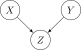

Berkson’s Paradox Example
To see Berkson’s paradox in action, consider a simplified model of hospital admissions:
- There are two independently-occurring diseases \(X\) and \(Y\), which occur with probability \(1/3\)
- The healthcare system functions in such a way that anyone who is found to have either disease is immediately admitted to a specialized hospital (\(Z\)) which treats only these two diesases
The Data-Generating Process, in this case, looks as follows:
- Generate exogenous noise variables \(U_1 \sim \mathcal{B}(1/3)\) and \(U_2 \sim \mathcal{B}(1/3)\)
- Set \(X = U_1\)
- Set \(Y = U_2\)
- Set \(Z = 1\) if \((X = 1 \vee Y = 1)\), 0 otherwise
So that we can represent the connections between the variables using the following PGM:

From this DGP (or just from the earlier fact that the diseases occur independently), we immedately have the two facts:
- \(\Pr(X = 1) = \frac{1}{3}\)
- \(\Pr(Y = 1) = \frac{1}{3}\)
Analyzing Hospital Admissions Data
Now, let’s say we are analyzing data from the hospital, so that all of the data in our dataset has \(Z = 1\).
The first step, which is not yet an example of Berkson’s paradox (just an application of Bayes’ theorem), is to compute the new disease probabilities given the observation that \(Z = 1\):
\[ \begin{align*} &\Pr(Y = 1 \mid Z = 1) \\ &= \frac{\Pr(Z = 1 \mid Y = 1)\Pr(Y = 1)}{\Pr(Z = 1 \mid Y = 1)\Pr(Y = 1) + \Pr(Z = 1 \mid Y = 0)\Pr(Y = 0)} \\ &= \frac{1 \cdot 1/3}{1 \cdot 1/3 + \Pr(X = 1)\Pr(Y = 0)} = \frac{1/3}{1/3 + (1/3)(2/3)} = \frac{1/3}{1/3 + 2/9} \\ &= \frac{1/3}{5/9} = \frac{1}{3} \cdot \frac{9}{5} = \frac{3}{5} \end{align*} \]
and by symmetry we also have \(\Pr(X = 1 \mid Z = 1) = \frac{3}{5}\).
These two quantities do fit our intuition, generally, since we can reason that we’re more likely to encounter a person with disease \(X\) in a hospital which specializes in treating \(X\) than we are to encounter this person in general.
Computing the Joint pdf
There are many ways we could proceed to “build up to” having the full joint pdf of \((X, Y, Z)\), but for me a key missing piece is the overall marginal probability of being in the hospital, \(\Pr(Z = 1)\). For this step, what clicks in my brain is to use the definition of how we translate the logical “or” into a statement involving probabilistic events (here we use the independence of \(X\) and \(Y\) in the last step):
\[ \begin{align*} \Pr(Z = 1) &= \Pr(X = 1 \vee Y = 1) \\ &= \Pr(X = 1) + \Pr(Y = 1) - \Pr(X = 1 \wedge Y = 1) \\ &= 1/3 + 1/3 - (1/3)(1/3) = 2/3 - 1/9 = \frac{5}{9} \end{align*} \]
As a reminder here, in looking for the joint pdf, we’re looking for the missing values in the following table. I’ve started by placing a 0 in the logically-impossible rows:
- Since having \(X\) or \(Y\) guarantees admission into the hospital, any row where \(X = 1\) or \(Y = 1\) but \(Z = 0\) is not possible
- Since the hospital only treats diseases \(X\) and \(Y\), admission \(Z = 1\) is not possible when \(X = 0\) and \(Y = 0\)
| \(X\) | \(Y\) | \(Z\) | \(\Pr(X, Y, Z)\) |
|---|---|---|---|
| 0 | 0 | 0 | |
| 0 | 0 | 1 | 0 |
| 0 | 1 | 0 | 0 |
| 0 | 1 | 1 | |
| 1 | 0 | 0 | 0 |
| 1 | 0 | 1 | |
| 1 | 1 | 0 | 0 |
| 1 | 1 | 1 |
From this table, we see that there are only four quantities we need to compute:
- \(\Pr(X = 0, Y = 0, Z = 0)\)
- \(\Pr(X = 0, Y = 1, Z = 1)\)
- \(\Pr(X = 1, Y = 0, Z = 1)\)
- \(\Pr(X = 1, Y = 1, Z = 1)\)
Let’s try tackling these one-by-one. First:
\[ \begin{align*} \Pr(X = 0, Y = 0, Z = 0) &= \Pr(Z = 0 \mid X = 0, Y = 0)\Pr(X = 0, Y = 0) \\ &= 1 \cdot \Pr(X = 0, Y = 0) = \Pr(X = 0)\Pr(Y = 0) \\ &= \frac{2}{3} \cdot \frac{2}{3} = \frac{4}{9} \end{align*} \]
Next:
\[ \begin{align*} \Pr(X = 0, Y = 1, Z = 1) &= \Pr(Z = 1 \mid X = 0, Y = 1)\Pr(X = 0, Y = 1) \\ &= 1 \cdot \Pr(X = 0, Y = 1) = \frac{2}{3} \cdot \frac{1}{3} = \frac{2}{9} \end{align*} \]
By symmetry, we also have \(\Pr(X = 1, Y = 0, Z = 1) = \frac{2}{9}\), leaving only one probability left in the joint pdf table above! Since the first three calculated probabilities sum to \(4/9 + 2/9 + 2/9 = 8/9\), we can conclude that the final slot is \(\Pr(X = 1, Y = 1, Z = 1) = \frac{1}{9}\)!
Or, if we want to compute it directly for sanity:
\[ \begin{align*} \Pr(X = 1, Y = 1, Z = 1) &= \Pr(Z = 1 \mid X = 1, Y = 1)\Pr(X = 1, Y = 1) \\ &= 1 \cdot \Pr(X = 1, Y = 1) = \Pr(X = 1)\Pr(Y = 1) \\ &= \frac{1}{3}\cdot \frac{1}{3} = \frac{1}{9}. \end{align*} \]
Thus our final pdf table is:
| \(X\) | \(Y\) | \(Z\) | \(\Pr(X, Y, Z)\) |
|---|---|---|---|
| 0 | 0 | 0 | \(4/9\) |
| 0 | 0 | 1 | 0 |
| 0 | 1 | 0 | 0 |
| 0 | 1 | 1 | \(2/9\) |
| 1 | 0 | 0 | 0 |
| 1 | 0 | 1 | \(2/9\) |
| 1 | 1 | 0 | 0 |
| 1 | 1 | 1 | \(1/9\) |
Berkson’s Paradox
Now, the point where Berkson’s Paradox enters the picture is when we try to evaluate the independence of the two diseases, solely on the basis of the hospital admissions data!
To see this, let’s now look at whether observing \(X = 1\) in the hospital’s dataset (the observation that someone in the dataset has disease \(X\)) changes the probability of having \(Y\). Recalling that \(\Pr(Y = 1 \mid Z = 1) = \frac{3}{5}\), let’s now compute the change in this quantity when \(X = 1\) is observed. Since we’ve computed the full joint pdf above, our task becomes fairly easy!
\[ \Pr(Y = 1 \mid X = 1, Z = 1) = \frac{\Pr(Y = 1, X = 1, Z = 1)}{\Pr(X = 1, Z = 1)}. \]
The numerator value of \(1/9\) we can read directly off the table above.
For the denominator, we can sum the probabilities across every row where \(X = 1\) and \(Z = 1\):
\[ \begin{align*} \Pr(X = 1, Z = 1) &= \Pr(X = 1, Y = 0, Z = 1) + \Pr(X = 1, Y = 1, Z = 1) \\ &= 2/9 + 1/9 = 3/9 \end{align*} \]
This means that the full result, dividing the numerator by the denominator, is
\[ \Pr(Y = 1 \mid X = 1, Z = 1) = \frac{1/9}{3/9} = \frac{1}{9}\cdot \frac{9}{3} = \frac{1}{3} \]
This reveals the issue: that if we only ever observe data on hospital patients, i.e., data where \(\Pr(E)\) is actually \(\Pr(E \mid Z = 1)\), then we will get the impression that having \(X\) makes \(Y\) less likely, and vice-versa! To see this, let \(\Pr_{Z = 1}(E)\) denote the probability of an event \(E\) that we would infer if we only had data with \(Z = 1\). Using this notation, we get that
\[ \Pr_{Z = 1}(Y = 1) = \frac{3}{5}, \Pr_{Z = 1}(Y = 1 \mid X = 1) = \frac{1}{3}, \]
in other words, we may easily be “tricked” into concluding that observing \(X = 1\) decreases the probability of \(Y = 1\), despite the fact that we know these diseases occur independently, given our knowledge of the full underlying DGP.
The do-Operator
Now, let’s re-compute these probabilities, using \(\textsf{do}\) to intervene directly in the DGP rather than using the conditional operator to simply “subset” the data:
- Generate exogenous noise variables \(U_1 \sim \mathcal{B}(1/3)\) and \(U_2 \sim \mathcal{B}(1/3)\)
- Set \(X = 1\) ()
- Set \(Y = U_2\)
- Set \(Z = 1\) if \((X = 1 \vee Y = 1)\), 0 otherwise
By applying this \(\textsf{do}\) operation, we see that in fact step can be simplified to just: [Set \(Z = 1\)], since \(X = 1 \vee Y = 1\) is always true if \(X = 1\), thus producing the following simplified form:
- Generate exogenous noise variables \(U_1 \sim \mathcal{B}(1/3)\) and \(U_2 \sim \mathcal{B}(1/3)\)
- Set \(X = 1\)
- Set \(Y = U_2\)
- Set \(Z = 1\)
And from this post-\(\textsf{do}(X = 1)\) DGP, we see how straightforwardly we recover the true causal effect of \(X\) on \(Y\) and vice-versa:
\[ \begin{align*} \Pr(Y = 1 \mid \textsf{do}(X = 1)) &= \Pr(U_2 = 1) = \frac{1}{3} = \Pr(Y = 1) \\ \Pr(X = 1 \mid \textsf{do}(Y = 1)) &= \Pr(U_1 = 1) = \frac{1}{3} = \Pr(X = 1), \end{align*} \]
and thus we have causal independence: \(\Pr(Y = 1 \mid \textsf{do}(X = 1)) = \Pr(Y = 1)\) and \(\Pr(X = 1 \mid \textsf{do}(Y = 1)) = \Pr(X = 1)\)!